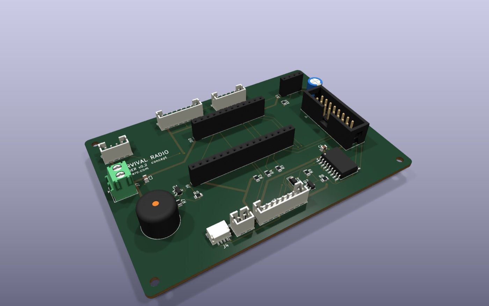

A survival radio you can build, explained from the ground up
After a major earthquake, a Cascadia event for example, nearby cell towers may be destroyed or without power for a long time. This hub gives you three independent ways to reach the outside world, plus a backstop you buy, in a box that survives drops and water.
- Satellite: an Iridium modem sends an SOS with your GPS position from anywhere with open sky. It does not need your phone.
- Mesh radio: a Meshtastic LoRa node lets you text neighbors and volunteer networks, phone-to-phone, with no towers.
- Ham radio (licensed): APRS position beacons and Winlink email over the regional emergency networks.
- Personal Locator Beacon: a certified, registered beacon you buy. It is the last resort that must not fail.
| Layer | What | Needs |
|---|---|---|
| Tier 0 · carry | Registered 406 MHz PLB, plus your phone's own satellite SOS if it has one (iPhone 14 and later, Pixel 9/10, T-Satellite) | buy, register |
| Tier 1 · DIY hub | This build: Iridium modem, Meshtastic mesh radio, GNSS, sensor pod, e-paper, SOS switch, IP67 case | build it |
| Tier 2 · ham radio | Handheld with APRS and Winlink; an SDR receiver for weather, aircraft and scanner traffic | amateur license to transmit |
| Tier 3 · Starlink | Starlink Mini on its own 12 V battery, for real internet when you can spare the power | subscription, 25–40 W |
| Budget kit | The same layers from ready-made gear, under $500: Meshtastic trackers, crank NOAA radio, FRS walkie-talkies, your phone's satellite SOS, power bank and solar, hard case, CO alarm. See the kit ↓ | buy, set up |
The tier buttons in the top-left corner of the 3D workbench show or hide each layer.
Around those radios sit a GNSS receiver, a motion sensor, a pod of air-quality sensors (natural gas, carbon monoxide, oxygen, CO₂, smoke), a 72 Wh battery with solar, USB-C and hand-crank charging, an e-paper screen, and a guarded SOS switch, all in an IP67 case. The same hub can ride in a backpack.
Five design rules
- Use certified transmitters; write your own glue code. You don't build radios that transmit on satellite or cellular bands. You connect approved modules and program the controller that coordinates them.
- Every function works without a phone. The phone is a nicer keyboard, not a dependency.
- Plenty of energy, many ways to recharge, everything switchable. Parts that aren't needed are powered off.
- Seal it, then prove it. Dunk the case and drop it before you trust it.
- Modular and repairable. Off-the-shelf boards, plug-in cables, printed brackets.
Not a certified life-safety device. This is an open, educational design. Carry a registered PLB, test the hub regularly, and never rely on a single path.
The 3D model in the workbench below is the real CAD model, at real size, of the hub described here. You can download it as STEP, STL or glTF and open it in any CAD program.
Why not just reach a far-away tower? And where does SDR fit?
The first idea most people have is a stronger radio that reaches a distant cell tower that is still standing. It's a good question, and the answer shapes the whole design.
A far tower is the wrong target
- The protocols limit range, not just power. A phone has to answer the tower within a precise time slot, and the "timing advance" that corrects for distance runs out at about 35 km for GSM and about 100 km at most for LTE. Real cells are set up far smaller than that, and a phone or booster can't change the tower's settings.
- The link has two directions. Even if you hear the tower, the tower must hear your phone's roughly 0.2 W transmitter, so a big antenna only on your side helps less than you'd hope.
- The tower must still work. After a major quake, surviving sites lose grid power and their fiber backhaul, and the ones still up are jammed with traffic. The Oregon Resilience Plan expects telecom restoration after a Cascadia earthquake to take months in the hardest-hit areas.
- Amplifiers are regulated. Consumer cell boosters are legal in the US only if FCC-certified and registered with your carrier (47 CFR §20.21). A homemade cellular amplifier is illegal and can disrupt the network for everyone.
- The legal version: a certified LTE router with external antenna ports and a directional antenna on a mast, shared to your phone over Wi-Fi. It helps only when a working tower is within normal range, so it's an add-on, not the plan.
So the hub doesn't chase towers. It uses links that need no local infrastructure at all: satellites overhead, and radios carried by your neighbors.
What an SDR can and can't do
A software-defined radio replaces most of a radio's circuits with software: a small receiver turns a slice of spectrum into numbers, and a computer does the tuning, filtering and decoding. That makes it a superb, flexible listener, and an RTL-SDR receiver is part of the Tier 2 kit.
| SDR can (receive) | SDR can't |
|---|---|
| NOAA Weather Radio, 162.400–162.550 MHz | Become a cell tower: the bands are licensed to carriers, and an isolated base station has no core network or 911 routing |
| ADS-B aircraft positions at 1090 MHz: see rescue helicopters and planes working your area | Become a satellite phone: satellite networks only accept certified, provisioned terminals |
| Unencrypted public-safety, scanner and ham traffic, including local emergency nets | Transmit legally outside amateur bands; on ham bands you need a license, filtering and a transmit-capable SDR |
| Spectrum survey: find which cellular bands are still on the air, and aim an LTE antenna | Replace the certified radios in this hub |
The SDR setup here is an RTL-SDR Blog V4 on a Raspberry Pi Zero 2 W. The Pi runs its own Wi-Fi network and a web interface, so you listen and look at the aircraft map in your phone's browser. See the SDR card in the parts list.
The budget kit: same layers, under $500
The full hub costs about $1,200 in parts, and a third of that is the satellite modem. The budget kit keeps the same idea, several independent ways to call for help, but uses cheap, ready-made gear. Nothing to solder, and it is ready in an afternoon.
| Layer | Full hub | Budget kit |
|---|---|---|
| Satellite SOS | RockBLOCK Iridium modem, works with no phone ($279 + airtime) | Your phone's built-in satellite SOS (recent iPhones and Pixels), or a 406 MHz beacon in the "beacon first" kit |
| Mesh texting | RAK mesh radio wired to the controller | Two card-sized Meshtastic trackers with GPS and battery, one for you and one for family |
| Weather and alerts | SDR receiver on a Raspberry Pi | Crank and solar NOAA alert radio that can also top up a phone |
| Voice | Licensed ham handheld (APRS) | License-free FRS walkie-talkie pair; GMRS or ham as an upgrade |
| Gas and air | Sensor pod: methane, CO, O₂, CO₂, smoke | A certified battery CO alarm |
| Power | 72 Wh pack, solar, crank, USB-C | 20,000 mAh power bank and a 28 W folding solar panel |
| Case | Pelican 1200, sealed connectors | Harbor Freight Apache 2800 (IP65) or a dry bag |
What you give up. Satellite SOS now depends on your phone: it has to be a supported model, charged, and working. The 406 MHz beacon is the dedicated, phone-free backstop, but at about $395 it doesn't fit under $500 together with everything else, so it gets its own preset. There is no automatic SOS from the case and no detailed air sensing; the CO alarm covers the most common deadly gas.
Build your kit
Start from a preset, then change any layer. The case shows what you've picked, and the meter keeps you honest against $500. Your choices are saved in this browser.
Add-ons
Your list
Set it up in an afternoon
- Mesh: install the Meshtastic app, pair each tracker over Bluetooth, set the region to US, and make a private channel. Share it with your family's tracker by QR code. Walk around the block to see how far it reaches.
- Phone satellite SOS: open your phone's satellite demo (iPhone: Settings → Emergency SOS → Try Demo; Pixel: Satellite SOS in Safety & emergency) and practice pointing at the sky. Check whether your model and plan still include it free.
- Radio: tune the weather radio to your local NOAA channel (162.550 MHz in Portland) and switch on its alert mode. Crank it once so you know how.
- Walkie-talkies: agree on a channel and a check-in time with your household, and write it inside the case lid.
- Power: charge the power bank, test the solar panel on a sunny day, and keep the cables in the case.
- Drill: once a season, spend an hour on battery and solar only: one mesh message across town, one satellite demo, one radio check-in.
Licenses. FRS radios and Meshtastic need no license. GMRS needs an FCC license ($35, no exam, 10 years, covers your immediate family). The Baofeng ham radio needs an amateur license to transmit. Anyone may use any radio to call for help when life is in immediate danger.
The hub on the bench
The real CAD model at real size. Drag to orbit, scroll or pinch to zoom, right-drag to pan, and click any part. Double-click to fly to a part.
Workbench controls
| Drag · right-drag · scroll | orbit · pan · zoom (pinch on touch) |
| Click · double-click | select a part · fly to it |
| ← → ↑ ↓ | orbit and tilt |
| + − | zoom |
| E / A | explode / animate assembly |
| X W L | x-ray · wiring · labels |
| B T F P | backpack · spin · full screen · snapshot |
| 1–5 | panel tabs |
| R · Esc | reset view · clear selection |
The whole system on one page
Every box is a part; every line is a connection, colored by type. Tap a box to jump to it in the 3D model.
The parts, one by one
Each card says what the part does, why this one, how it connects, its power use, and where to get it. Prices are approximate US retail checked in November 2026 and change often. Where a link goes to a distributor, any equivalent part works.
Loading the parts list…
How the parts talk to each other
Inside the case, parts talk over wires using a handful of standard "buses", each a set of wires plus agreed rules. Outside, the hub talks over radio. Below are the buses from the ground up, with what actually travels on each one. In the 3D model, the Connect tab lights up each bus.
First: ground and 3.3-volt logic
A digital signal is a voltage measured relative to ground. In this hub, "1" (HIGH) is about 3.3 V and "0" (LOW) is about 0 V. Two consequences:
- Every board must share ground. If the controller and the modem don't have a ground wire between them, neither can tell what voltage the other is sending. A missing ground is the most common reason a "correctly wired" link does nothing.
- Don't feed 5 V signals into 3.3 V pins. The ESP32-S3's pins are not 5 V tolerant. The RockBLOCK 9704's logic inputs accept at most 3.6 V, and the methane sensor's UART runs at 3.0 V levels. Power rails can be 5 V; signal lines stay at 3.3 V.
UART (serial): one wire each way
A UART link is the simplest: one wire for sending (TX) and one for receiving (RX), plus ground. The wires cross: my TX goes to your RX. There is no clock wire, so both sides must agree on the speed in advance. That speed is the baud rate (bits per second).
When idle the line sits HIGH. To send a byte, the sender pulls it LOW for one bit-time (the start bit), sends 8 data bits least-significant first, then returns HIGH for a stop bit. That's 10 bit-times per byte, called "8N1". Here is the letter "A" (0x41 = 0100 0001):
The controller (an ESP32-S3) has three hardware UARTs and can route each to almost any pin. The hub uses all three:
UART 1 · Controller ↔ RockBLOCK 9704 (satellite)
- Wiring: Feather TX (GPIO39) → RockBLOCK pin 14
RXD; Feather RX (GPIO38) ← pin 13TXD; ground ↔ pins 1/4/10. Logic is 3.3 V TTL. - Speed: fixed at 230400 baud; the library notes the modem hardware requires it.
- Language: the Iridium 9704 uses JSPR, a JSON-based serial protocol. Ground Control's open-source library (C, Arduino, Python) handles the protocol, message chunking and power modes, so you call a few functions. Your binary message is encoded as text for the trip over the wire, so slightly more bytes travel than you send.
// pseudo-code; see the RockBLOCK-9704 library examples for exact signatures
modemPowerOn(); // drive I_EN HIGH, wait for I_BTD HIGH (GPIO, below)
rbBegin(port); // open UART at 230400 baud, configure the modem
bool ok = rbSendMessage(sos, len, timeout); // default Cloudloop topic 244
char *reply; size_t n = rbReceiveMessage(&reply); // any message queued for you
modemPowerOff(); // drive I_EN LOW, wait for I_BTD LOWUART 2 · Controller ↔ mesh radio (Meshtastic)
- Wiring: Feather A0 (GPIO18, TX) → RAK19007
RXD1(pin 15); Feather A1 (GPIO17, RX) ←TXD1(pin 16); ground. - Setup in the Meshtastic app: Module config → Serial: enabled, RX 15, TX 16, and a baud rate. The default is 38400; 115200 is a common choice. Then set Position → GPS mode to
Not_Present, because the RAK19007 shares this UART with its GPS slot (the hub's GNSS is on the controller instead). - Easy mode,
TEXTMSG: any line of text the controller sends is broadcast as a mesh message, and incoming messages arrive asShortName: text. Good for a first test. - Full mode,
PROTO: the same protobuf API the phone app uses. Every frame starts with two magic bytes and a 2-byte length:
With PROTO mode the controller can send text, broadcast its GNSS position to the mesh, read incoming messages and see which nodes are nearby. You compile Meshtastic's published protobuf definitions with a small protobuf library for microcontrollers, such as nanopb.
UART 3 · Controller ↔ methane sensor (through the pod cable)
- Wiring: Feather A2 (GPIO16, TX) → M12 pin 6 → sensor RX; Feather A3 (GPIO15, RX) ← M12 pin 7 ← sensor TX.
- Format: NDIR methane modules like the Winsen MH-440D use short fixed-length frames (typically 9600 baud). The manual shows a 9-byte reply such as
FF 86 02 60 47 00 00 00 D1: bytes 2–3 hold the concentration, and the last byte is a checksum. It needs about 3 minutes to warm up after power-on.
I²C: two wires, many sensors
I²C (say "I-squared-C") lets one controller talk to many devices over just two shared wires: SDA (data) and SCL (clock), plus power and ground. Each device has a 7-bit address. The controller starts every conversation by sending an address, and only the device with that address answers.
- Clocked: the controller drives SCL, so no baud-rate agreement is needed. Common speeds are 100 kHz and 400 kHz.
- Open-drain with pull-ups: devices only ever pull a line LOW; resistors pull it back HIGH. The Feather has 5 kΩ pull-ups and most breakout boards add their own. They add in parallel, which is fine for a handful of boards; if you chain many, disable some.
- Qwiic / STEMMA QT: a 4-pin JST-SH plug carries GND (black), 3.3 V (red), SDA (blue) and SCL (yellow), so you daisy-chain boards with no soldering. The Feather can switch this port's power off (GPIO7) to save energy in sleep.
| Address | Device | Where | What it reports |
|---|---|---|---|
0x42 | u-blox MAX-M10S GNSS | hub | position, time, satellites (UBX binary) |
0x18 | LIS3DH accelerometer | hub | motion, free-fall; INT1 pin wakes the controller |
0x36 | MAX17048 fuel gauge | on the Feather | battery voltage and % charge |
0x62 | Sensirion SCD-41 | pod | CO₂, temperature, humidity |
0x77 | BME280 | pod | temperature, humidity, pressure |
0x12 | PMSA003I | pod | PM1.0 / PM2.5 / PM10 (fixed address) |
0x70–0x73 | DFRobot O₂ sensor | pod | oxygen % (address set by a switch) |
| set by dial | DFRobot CO sensor (SEN0466) | pod | CO ppm, factory-calibrated |
0x20-ish | I²C GPIO expander | hub | extra outputs (boost enable, pod LED and vibration, panel LED) |
Example: reading CO₂. To read the SCD-41, the controller writes the 2-byte command 0xEC05 ("read measurement") to address 0x62, waits a millisecond, then reads 9 bytes: CO₂, temperature and humidity, each as 2 bytes followed by a 1-byte checksum (CRC).
The datasheet gives the conversions: temperature = −45 + 175 × raw ÷ 65535 °C, humidity = 100 × raw ÷ 65535 %. A library does this for you, but now you know what's on the wire.
The pod cable. I²C was designed for short traces on a circuit board. Over the pod's M12 cable, keep the length under about 1 m and run the bus at 100 kHz. For longer runs, use a differential I²C extender (PCA9615-based boards).
SPI: the display link
SPI is a fast, clocked bus for one device per chip-select wire. The controller drives SCK (clock) and MOSI (data out); a third data line, MISO, is unused because the e-paper only listens. The display adds three control wires:
| E-paper pin | Feather pin | Meaning |
|---|---|---|
CLK | SCK (GPIO36) | clock: one pulse per bit |
DIN | MOSI (GPIO35) | data from controller to display |
CS | D10 | "I'm talking to you" (active LOW) |
DC | D9 | LOW = command byte, HIGH = pixel data |
RST | D6 | hardware reset |
BUSY | D12 | display says "still repainting, wait" |
VCC / GND | 3.3 V / GND | power |
A full refresh takes a few seconds; a partial refresh (just the changed lines) is under a second. Between refreshes the panel draws essentially nothing and keeps showing the last image.
GPIO: switches, buttons, buzzer and enable lines
- SOS switch (D5 / GPIO5): input with a pull-up resistor; the switch connects it to ground. Flipping it makes a HIGH→LOW edge. On the ESP32-S3, pins GPIO0–21 can wake the chip from deep sleep, so the switch wakes it in milliseconds.
- Debouncing: mechanical contacts "bounce" for a few milliseconds. Ignore changes for about 20 ms after the first edge.
- Buttons: three buttons on one analog pin (A4) through a resistor ladder, so each press reads a different voltage. This saves pins.
- Buzzer (D13): a PWM square wave sets the tone; a small transistor drives it. The vibration motor needs a transistor and a flyback diode.
- Motion wake (A5 / GPIO8): the LIS3DH's INT1 pin, for wake-on-motion and free-fall.
The RockBLOCK power handshake
The satellite modem must be started and stopped in order, or it can be damaged. Ground Control documents this sequence:
- Keep the controller's pins to the modem LOW or high-impedance, then apply power (5 V boost on).
- Raise
I_EN(pin 3, from D11). - Wait until
I_BTD(pin 7, to MI / GPIO37) goes HIGH, meaning "booted". From cold this takes tens of seconds while the supercapacitors charge. - Open the UART and talk.
- To shut down: stop talking, drop
I_EN, wait forI_BTDto go LOW, then remove power.
Pin budget. The Feather has about 22 usable pins and this design needs about that many. Slow outputs (boost enable, pod LED, vibration motor, panel LED) therefore go through a small I²C GPIO expander. Running out of pins is a normal design problem, and an expander on the bus you already have is the usual fix.
Power wiring
Power is a bus too: energy flows from sources to the battery and then to each part.
- Inputs: USB-C (5 V) and DC-IN (6–10 V solar or crank), each through a TVS diode that clamps voltage spikes.
- Charger with power path (bq24074): runs the hub from the input when there is one, and charges the battery with what's left.
- Battery (3.0–4.2 V) through an inline fuse right at the pack. A shorted wire then blows the fuse instead of starting a fire.
- LOAD rail (≤ 4.4 V) → controller BAT pin and mesh radio battery input; each board's own regulator makes its 3.3 V.
- Switched 5 V rail from a boost converter → RockBLOCK
V_IN+(4.0–5.3 V, up to 500 mA), the particle sensor and the methane sensor. Off when not needed. - Switched 3.3 V sensor rail: the Feather's STEMMA QT power (GPIO7).
- One ground joining everything, ideally at a single point.
RF coax: the antenna links
Radio-frequency signals travel on coaxial cable: a center conductor inside a shield that keeps the signal in and noise out. Each radio board has a tiny u.FL connector. A thin pigtail runs from it to an SMA bulkhead through the lid, with an O-ring on the outside, and the antenna screws on top.
- LoRa: RAK4631 → 915 MHz whip. Never transmit without an antenna attached; the power has nowhere to go and can damage the radio.
- Iridium: RockBLOCK SMA → passive helical (1616–1626.5 MHz). Ground Control sells a 1 m low-loss cable with a sealed bulkhead for exactly this.
- GNSS: receiver SMA → small active patch inside the lid. The plastic lid lets GNSS signals through, so no extra hole is needed.
- Keep coax short, don't kink it, and remember u.FL connectors are rated for only a few dozen connect/disconnect cycles.
- Check SMA vs RP-SMA when buying antennas and pigtails. They look alike but don't mate properly.
Wiring table
Pin names follow Adafruit's ESP32-S3 Feather pinout. Treat this as a starting plan and check every pin against the official pinout card before soldering.
| Feather pin (GPIO) | Connects to | Bus | Notes |
|---|---|---|---|
| TX (39) | RockBLOCK pin 14 RXD | UART 1 | 230400 8N1 |
| RX (38) | RockBLOCK pin 13 TXD | UART 1 | |
| D11 (11) | RockBLOCK pin 3 I_EN | GPIO out | modem on/off |
| MI (37) | RockBLOCK pin 7 I_BTD | GPIO in | "booted" |
| A0 (18) | RAK19007 RXD1 (pin 15) | UART 2 | Meshtastic PROTO / TEXTMSG |
| A1 (17) | RAK19007 TXD1 (pin 16) | UART 2 | |
| A2 (16) | Pod M12 pin 6 → methane RX | UART 3 | ~9600 baud |
| A3 (15) | Pod M12 pin 7 ← methane TX | UART 3 | |
| SDA (3) / SCL (4) | STEMMA QT chain: GNSS, LIS3DH, GPIO expander; pod M12 pins 4/5 | I²C | 100 kHz with the pod cable |
| SCK (36) / MO (35) | E-paper CLK / DIN | SPI | |
| D10 · D9 · D6 · D12 | E-paper CS · DC · RST · BUSY | SPI control | |
| D5 (5) | SOS switch → GND | GPIO in | wakes from deep sleep |
| A5 (8) | LIS3DH INT1 | GPIO in | wake on motion |
| A4 (14) | 3 buttons on a resistor ladder | ADC | one pin, three buttons |
| D13 (13) | Buzzer driver transistor | PWM | shares the red onboard LED |
| GPIO expander | 5 V boost EN, pod LED and vibration (M12 pin 8), panel LED | I²C | slow outputs |
| BAT / GND | LOAD rail (≤ 4.4 V) / common ground | power | don't plug USB into the Feather while it's wired in |
Circuits and a carrier board
Start by hand-wiring with plug-in cables; it is the fastest way to get each part working. Once everything works, the small circuits around the controller move onto one carrier board: a PCB that the Feather, the boost module and every cable plug into.
Four small circuits, animated
Most of the hub is ready-made modules. These four circuits are the glue you build yourself. Pick one, press the buttons, and watch current flow (moving dashes) and the pins' voltages on the scope.
The carrier board in 3D
A 100 × 70 mm two-layer board designed in KiCad with parts from KiCad's standard libraries: about 100 copper traces and 45 vias, with the whole bottom layer used as a ground plane. Pick a net to light it up and watch signals travel along its copper. Drag the Layers slider to pull the board apart into copper, solder mask, silkscreen and parts. Build it plays the assembly in the order you would solder it.
Checked in KiCad 10. The schematic passes the electrical rules check (0 errors, 0 warnings), and the board passes the design rules check with 0 violations, 0 unconnected pins and 0 differences from the schematic. The rules are 0.2 mm clearance and 0.25 mm minimum track, within what common prototype board houses make.
Before you order, check three things against the real parts, because a script can't: the Feather's pin order on J9 and J10, the MiniBoost's pin order on J11, and the RockBLOCK 9704 header (modelled here as a 2 × 8 ribbon header). The board has not been built or tested yet.

What is on the board
Soldering order
- Surface-mount parts first, lowest first: 0805 resistors and capacitors, the SOD-123 diodes, the SOT-23 transistors, then the SOIC expander (pin 1 dot to the silkscreen mark). Tack one pad, check alignment, then solder the rest.
- Through-hole connectors: JST sockets, the 2 × 8 modem header (notch matching the silkscreen), the screw terminal.
- Tall parts: the buzzer and the 100 µF capacitor. Its stripe marks the negative lead.
- Sockets for the modules: plug the Feather into its female headers, put the assembly on the board, and solder with the Feather in place so the sockets line up.
- Before power: with a multimeter, check that LOAD, 5V and 3V3 are not shorted to GND. Then power the board from a bench supply at 3.7 V with the current limit at about 200 mA, and only then plug in the battery.


router.py and sexpr.py from the same folder.python
Connecting your phone
The hub never needs your phone, but a phone makes typing and reading much easier. There are five ways they connect. Each uses a different radio or cable, and each is good for something different.
1 · Bluetooth LE to the mesh radio (Meshtastic app)
Use it for texting people on the mesh, seeing the map of nearby nodes, and sharing your position.
- Install the free Meshtastic app (iPhone or Android) and turn on Bluetooth.
- Power the hub. The mesh radio advertises itself over Bluetooth LE.
- In the app, scan and pick your radio. It asks for a PIN: with no screen attached, the default is a fixed PIN, 123456. Change it to your own six digits once connected.
- Set the region to US (902–928 MHz), and create a private channel with its own encryption key. Share it with family by QR code.
- Decide whether to share your phone's location with the mesh.
Under the hood. Bluetooth LE devices expose services made of characteristics, small named slots the phone can read, write or subscribe to. The Meshtastic service 6ba1b218-15a8-461f-9fa8-5dcae273eafd has three that matter:
- ToRadio (write): the app writes a protobuf packet, such as a text message.
- FromRadio (read): the app reads packets one at a time until it gets an empty one.
- FromNum (notify): the radio "taps the app on the shoulder" when new packets are waiting.
On connecting, the app asks for a 512-byte maximum packet size (MTU), downloads the radio's configuration and node list, then waits for FromNum notifications. These are the same protobuf messages the controller uses over its UART in PROTO mode, just carried over a different link.
2 · Wi-Fi to the hub's own web page (no app)
Use it for typing satellite messages, checking battery, GPS and air readings, and reading replies, from any phone or laptop browser.
- Press Menu on the hub to switch Wi-Fi on. It is off by default because Wi-Fi uses a lot of power, and it turns itself off after about 10 minutes idle.
- On your phone, join the network
SURVIVAL-HUBwith the password you chose. - Open http://192.168.4.1, or wait for the sign-in-style popup if you enable a captive portal.
- If the phone warns "no internet", choose stay connected. The page works entirely offline.
Under the hood. The ESP32-S3 runs in access-point mode: it is the Wi-Fi network. A tiny DHCP server hands your phone an address, and a small web server sends the page. A WebSocket then keeps a live two-way channel open, so readings update without reloading. When you press Send via Iridium, the page sends your text to the controller, which queues it for the satellite modem over UART 1.
3 · Bluetooth LE to the controller (optional)
Use it for a custom app, or a web page using Web Bluetooth (Chrome on Android and desktop; Safari on iPhone doesn't support Web Bluetooth). The common choice is the Nordic UART Service (6E400001-B5A3-F393-E0A9-E50E24DCCA9E), a de-facto standard that makes Bluetooth LE look like a serial port.
4 · USB-C cable
Use it for setup, firmware updates and debugging. Android phones with USB-OTG can open a serial terminal app; a laptop can do everything. Inside the case, the boards' own USB ports are for development only; the sealed USB-C port on the case is for power: it charges the hub, and with the V2 power board it can also charge your phone (see Energy).
5 · No hub at all
Many phones now have their own satellite emergency features: Emergency SOS via satellite on iPhone 14 and later, Satellite SOS on Pixel 9/10, and carrier services such as T-Mobile's T-Satellite. A Starlink Mini, if you carry one, gives full internet over Wi-Fi. Know what your phone can do before you need it.
| Need | Best link | Why |
|---|---|---|
| Text neighbors, family nearby, volunteer nets | Bluetooth → mesh radio | free, instant, no infrastructure |
| Reach anyone, anywhere | Wi-Fi page → satellite | works far from everyone; costs a little airtime |
| Emergency with a dead or broken phone | SOS switch | no phone involved at all |
| Set up, update, debug | USB-C | simplest and most reliable |
| Full internet | Starlink Wi-Fi | needs 25–40 W and its own battery |
Follow one message from start to finish
Journey 1: SOS with no phone
- Switch: you lift the guard and flip the switch. GPIO5 goes LOW and the ESP32-S3 wakes from deep sleep in milliseconds.
- Power: the controller turns on the 5 V boost, raises
I_ENand waits forI_BTD. Meanwhile it works on the next steps. - Position: it reads the GNSS over I²C. A "hot start" from saved data takes seconds; if there's no fix, it uses the last stored position and marks its age.
- Air: it reads O₂, CO, CO₂ and temperature from the pod.
- Pack: it builds a 28-byte binary header (position, time, battery, status, air readings) plus your short preset text. Try it in the SOS tab to see every byte.
- Send:
rbSendMessage()hands the bytes to the modem over UART at 230400 baud. The modem waits for a satellite in view and transmits. - Space and ground: Iridium satellites pass the message between themselves to a ground station, and it arrives in Cloudloop, typically within seconds.
- Delivery: Cloudloop forwards it to the destinations you set up: email, an HTTP webhook, MQTT and others. A tiny cloud function on the webhook can decode the bytes and text your family a map link.
- Mesh too: the controller also sends a ToRadio packet over UART 2. The mesh radio broadcasts your position and alert on your private channel.
- Repeat: it powers the modem down, sleeps, and repeats every 10–30 minutes until you cancel. Each check-in also collects any reply waiting in Cloudloop.
Journey 2: a text to a neighbor over the mesh
You type in the Meshtastic app → the phone writes a ToRadio packet over Bluetooth → the mesh radio encrypts it with your channel key and transmits on 915 MHz → nearby nodes rebroadcast it (up to 3 hops by default) → your neighbor's radio decrypts it and notifies their phone over Bluetooth → an acknowledgement travels back the same way.
Journey 3: a satellite text typed on your phone, and the reply
Phone → Wi-Fi → the hub's page → controller → UART 1 → RockBLOCK → Iridium → Cloudloop → your contact's email. When they reply, the message is queued in Cloudloop as a mobile-terminated message. Satellites can't wake a powered-off modem, so it waits until the hub's next scheduled check-in. The controller then fetches it with rbReceiveMessage() and shows it on the e-paper and the web page.
Energy budget and charging
The Power tab in the 3D view is a live calculator. The rules of thumb behind it:
| Load | Typical | Per day (estimate) |
|---|---|---|
| Controller in deep sleep, waking briefly | ~100 µA asleep | < 0.5 Wh |
| Mesh radio, mostly listening | 5–6 mA RX, 100–120 mA TX | 0.5–1.5 Wh |
| GNSS, duty-cycled | < 25 mW tracking | 0.1–0.6 Wh |
| Satellite modem, powered only to send | 1.4 W peak, 60 mW idle | 0.2–1.5 Wh for ~24 messages |
| Sensor pod, duty-cycled | PM fan ≤ 100 mA, methane < 85 mA | ~2 Wh |
| Phone recharge | ~15–20 Wh battery + losses | ~21 Wh |
The hub alone needs only a few watt-hours a day, so the 72 Wh pack lasts weeks. Recharging a phone dominates everything. The simple bq24074 charger takes up to about 1.5 A, roughly 25–30 Wh on a sunny day. For bigger panels or car 12 V, the upgrade is an MPPT buck-boost charger such as TI's BQ25798 (3.6–24 V in, up to 5 A).
Charging your phone. The simple bq24074 charger only takes power in. To charge a phone from the hub's battery, build the power board around the BQ25798 instead: its USB OTG mode runs the converter backwards and supplies 5 V at up to 3.32 A on the USB-C port, so the same sealed port charges the hub or your phone. A small USB-C port controller handles the cable's CC pins, which tell each side which way power flows. With the V1 board, charge the phone straight from the solar panel's USB port or from a power bank.
Cold rule: never charge lithium cells below 0 °C. It plates metallic lithium inside the cell and permanently damages it. The 10k NTC thermistor on the pack lets the charger refuse. Discharging in the cold is fine; keep the pack inside your jacket on snowy days.
The backpack version
Press Backpack (or the B key) in the 3D workbench. The same hub stands upright in the padded hydration sleeve, against your back, low and centered for balance. That is the most protected spot if you fall.
- Antennas up: short coax runs from the two lid bulkheads to a telescoping mast clipped to the side of the pack. The LoRa whip and Iridium helical sit above your head. Your body absorbs radio signals, and height adds range.
- Sensor pod on the shoulder strap: it samples the air you breathe, and its LED and vibration motor alert you without looking.
- Solar on the outside: a 20 W two-panel unit charges as you walk. Treat it as a top-up; aim it at the sun when you stop.
- Rain cover and reflective strip: the case is IP67 on its own, and visibility helps rescuers find you at night.
Build it in stages
Each stage ends with a test you can check off. Get one thing working before adding the next.
- Mesh radio + phone: unbox the RAK kit, attach the antenna first, update Meshtastic, pair your phone, make a private channel, and walk around the block testing range. Test: message two phones across the neighborhood.
- Controller + I²C: flash a "Blink", then an I²C scanner sketch with the GNSS and LIS3DH plugged in. Test: the scanner prints
0x18,0x36and0x42; you read a GNSS fix outdoors. - Display + buttons + SOS switch: draw the status screen; wake from deep sleep on the switch. Test: measured sleep current under 1 mA.
- Mesh link: wire UART 2, start in TEXTMSG mode, then move to PROTO. Test: a line from the controller appears on your phone.
- Satellite: first try the RockBLOCK alone over USB with Ground Control's Python library on a laptop. Set up a Cloudloop destination such as email. Then wire UART 1 and the power handshake. Test: one real message reaches your inbox. Airtime is billed, so use dry runs while developing.
- SOS state machine: write it as explicit states (IDLE → ARMED → FIX → SEND → WAIT → RETRY) and log every transition to flash. Test: pulling the battery mid-send never leaves the modem in a bad state.
- Power: battery pack with fuse, charger, boost and NTC. Test: charge from USB-C, solar and the crank; confirm no charging in a freezer test (pack only).
- Enclosure: print the plate, cradle and bezel (see Downloads). Drill on flat areas with a step drill, deburr, and fit the bulkheads with O-rings on the outside. Conformal-coat the boards, masking connectors, antennas and sensor openings. Mount the plate on silicone pads, strain-relieve every cable, and add a desiccant pack. Test: 30 minutes under water with a paper towel inside, then a set of 1.2 m drops onto plywood over concrete.
- Sensor pod: print the shell, mount the sensors, run the cable. Test: O₂ reads about 20.9 % in fresh air; compare CO and methane against a certified detector, not by exposing yourself to gas.
- Drill quarterly: a "grid-down day" with the hub on battery and solar only. Send one satellite test, one mesh message across town, and check every reading.
Materials: what to buy and where
Loading the list…
This list is for the full hub. For the under-$500 version built from ready-made gear, see the budget kit builder.
Every part of the hub, the build supplies, and the tools, with a price and a store link for each. Tick what you already own and change quantities; the totals update and are remembered in this browser. Prices are US retail checked on the date shown and change often, so treat them as a guide. Where a link goes to a distributor, any equivalent part works.
Downloads: CAD model and files
The model is built at real scale in millimetres, with Z up and the latch side of the case facing −Y. It is generated by an open Python script, so you can change any dimension and rebuild it.
pip install cadquery, then python build_cad.py out/.python
Opening the files
- Fusion 360: upload or open the .step file. It arrives as an assembly with one component per part.
- FreeCAD: File → Open (or Import) the .step. Part names and colors come through.
- Onshape: import the .step into a Part Studio or Assembly.
- SolidWorks / Inventor: File → Open and choose the STEP file type.
- Blender: File → Import → glTF 2.0 (.glb).
- 3D printing: open the STL files from the printable-parts zip in your slicer. PETG or ASA, 0.2 mm layers, at least 4 walls.
About accuracy. The case, boards and modules use published dimensions (Pelican 1200, RockBLOCK 9704 SMA, RAK19007, ESP32-S3 Feather, MAX-M10S, Waveshare 2.9", Adafruit SCD-41 and PMSA003I, DFRobot boards, 21700 cells). Some parts are envelope estimates and are marked APPROX in the script: the charger and boost boards, the methane sensor, the Iridium antenna and the inside of the modem. Measure your actual parts before you drill or print.
Safety and legal notes
- Lithium batteries: buy a pre-built pack with a protection board; don't solder directly to cells unless you have the right tools. Fuse at the pack, never charge below 0 °C, and don't seal a damaged or swollen cell in a box.
- Gas sensors: a homemade pod is an awareness aid, not a certified detector. Electrochemical cells age (about 2 years for O₂), so calibrate and replace them. Don't decide whether a confined space is safe using this pod alone.
- False alerts: label test messages clearly, use the switch guard, and tell your contacts what a real alert looks like.
- Radio rules (US), quick reference:
- Part 15: LoRa at 902–928 MHz, Bluetooth and Wi-Fi with certified modules, no license.
- Part 95: FRS needs no license; GMRS needs one (no exam). 406 MHz PLBs must be type-approved and registered with NOAA, so you cannot build one.
- Part 97: amateur radio (APRS, Winlink, HF, homebrew transmitters) needs a license and forbids encryption. §97.403 lets an amateur station use any means of radio communication at its disposal when life is in immediate danger and normal systems are down. It is a narrow emergency provision, not a design basis.
- Part 20: only FCC-certified, carrier-registered signal boosters are allowed.
- The RockBLOCK is a certified, network-approved transmitter you integrate; receive-only SDRs need no license. Never transmit on cellular or satellite bands with a homemade radio or SDR.
- Airtime: keep the satellite line active and paid up. Activating a modem after a disaster, when the internet is down, may not be possible.
Not legal advice. Rules and services change; check current FCC rules and provider terms.
Sources
- Ground Control: RockBLOCK 9704 hardware (pinout, power, start-up sequence)
- RockBLOCK 9704 data sheet
- RockBLOCK 9704 C library reference
- Ground Control: IMT airtime pricing
- Cloudloop Data: delivery options
- Meshtastic client API (serial framing, BLE service)
- Meshtastic Serial module (PROTO, TEXTMSG, RAK pins)
- Meshtastic Bluetooth pairing modes
- RAK19007 WisBlock base board datasheet
- Adafruit ESP32-S3 Feather · pinouts
- SparkFun MAX-M10S GNSS breakout
- Adafruit SCD-41 · Adafruit PMSA003I · Adafruit LIS3DH
- DFRobot calibrated CO sensor (SEN0466) · DFRobot O₂ sensor (SEN0322)
- Winsen MH-440D NDIR methane sensor
- Waveshare 2.9" e-Paper module
- Adafruit bq24074 charger
- Pelican 1200 case dimensions
- Ground Control helical Iridium antenna
- Amphenol LTW IP67 USB-C bulkhead
- Starlink Mini power
- RTL-SDR Blog V4 release notes · Raspberry Pi Zero 2 W
- TI BQ25798 (MPPT charger with USB OTG output)
- 47 CFR §20.21: signal boosters
- Oregon Resilience Plan: Cascadia · Portland BEECN guidelines